Soru 1Cevap: B
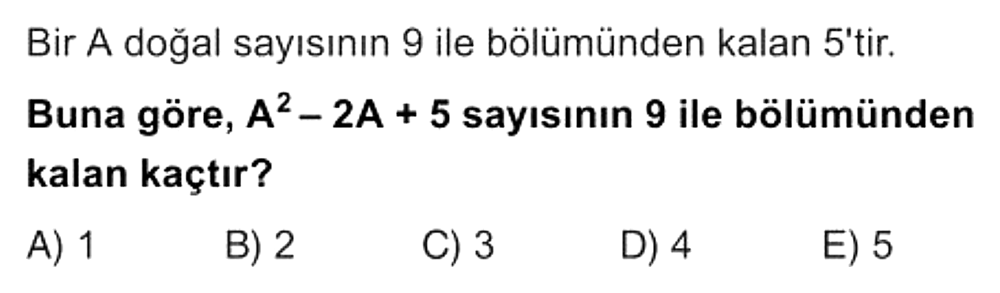
Çözüm
- $A\equiv5 \pmod 9$ ise ifadede $A$ yerine $5$ yazılabilir.
- $5^2-2\cdot5+5=20$.
- $20$'nin 9 ile bölümünden kalan $2$ → B.
Cevap: B
Soru 2Cevap: A
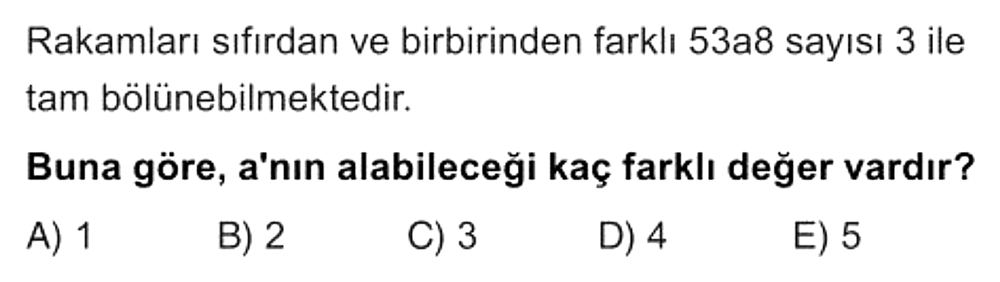
Çözüm
- $5+3+a+8=16+a$ toplamı 3'ün katı olmalı: $a\in\{2,5,8\}$.
- Rakamlar sıfırdan ve birbirinden farklı: 5 ve 8 zaten kullanılmış.
- Yalnız $a=2$ → 1 değer → A.
Cevap: A
Soru 3Cevap: C
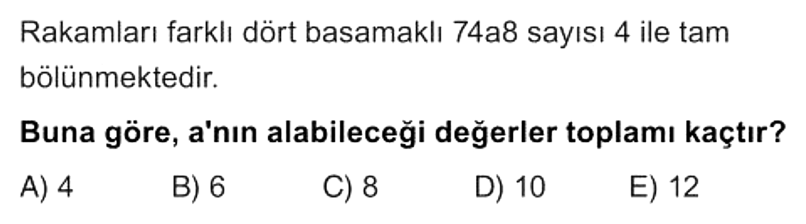
Çözüm
- 4 ile bölünme son iki basamağa bağlı: $\overline{a8}$, 4'ün katı olmalı.
- $\overline{a8}$ 4'ün katı $\iff a$ çift: $a\in\{0,2,4,6,8\}$.
- Rakamlar farklı: 4 ve 8 çıkar; $0+2+6=8$ → C.
Cevap: C
Soru 4Cevap: B
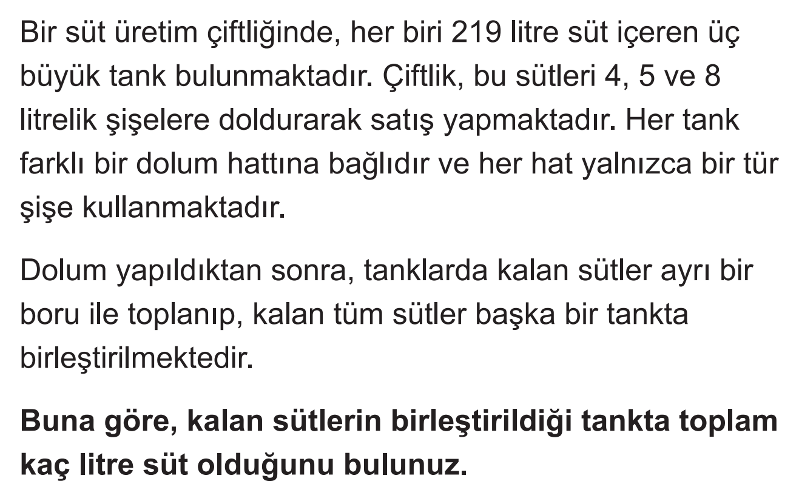
A)8B)10C)12D)13E)15
Çözüm
- $219$'un 4 ile bölümünden kalan: son iki basamak $19$ → $3$.
- 5 ile kalan: birler basamağı $9$ → $4$; 8 ile kalan: son üç basamak $219=8\cdot27+3$ → $3$.
- Toplam $3+4+3=10$ litre → B.
Cevap: B
Soru 5Cevap: E
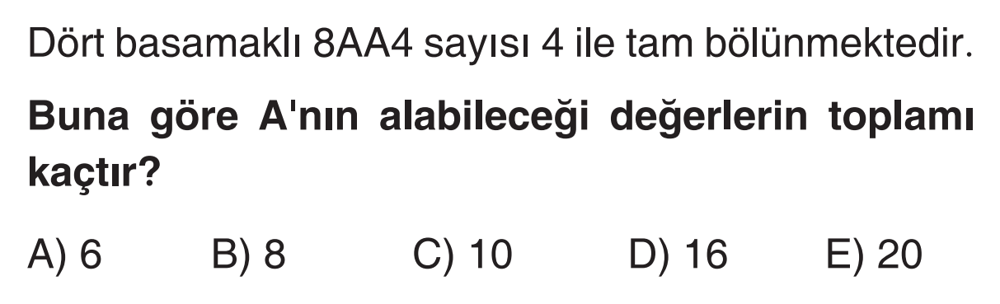
Çözüm
- 4 ile bölünme: $\overline{A4}$ 4'ün katı.
- $\overline{A4}=10A+4$; $A$ çift olmalı: $0,2,4,6,8$.
- Toplam 20 → E.
Cevap: E
Soru 6Cevap: E
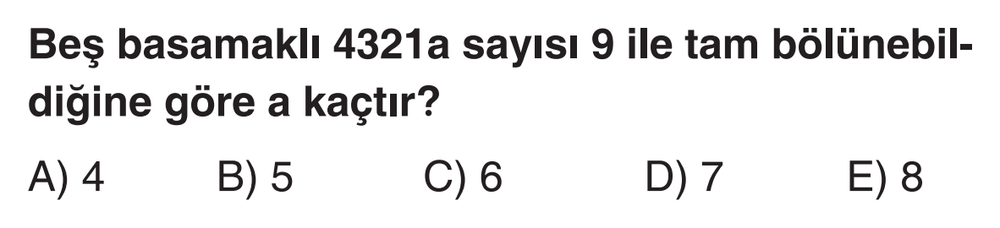
Çözüm
- 9 ile bölünme: rakamlar toplamı 9'un katı.
- $4+3+2+1+a=10+a$.
- $10+a=18 \Rightarrow a=8$ → E.
Cevap: E
Soru 7Cevap: D
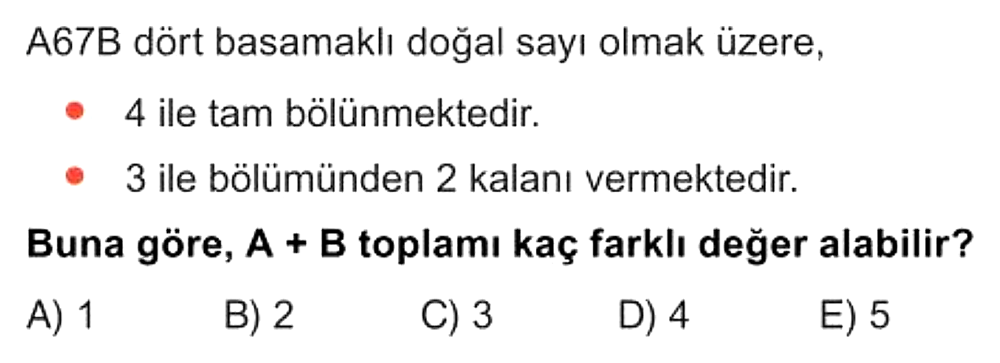
Çözüm
- 4 ile bölünme: $\overline{7B}$ ∈ $\{72,76\}$ → $B\in\{2,6\}$.
- 3 ile kalan 2: $A+6+7+B\equiv2 \Rightarrow A+B\equiv1 \pmod 3$.
- $B=2$: $A\in\{2,5,8\}$; $B=6$: $A\in\{1,4,7\}$ → $A+B\in\{4,7,10,13\}$: 4 değer → D.
Cevap: D
Soru 8Cevap: E
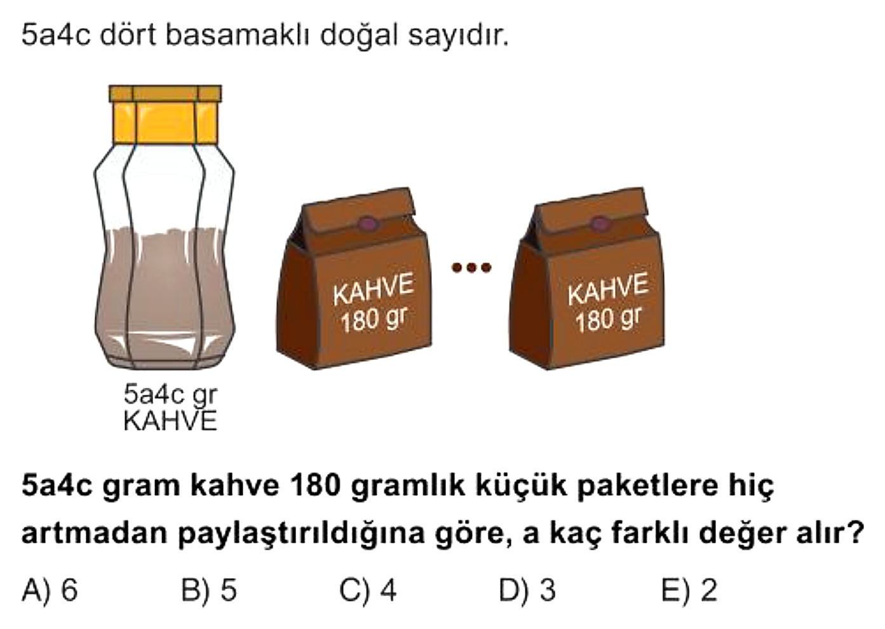
Çözüm
- $180=4\cdot5\cdot9$ (aralarında asal çarpanlar); $5a4c$ hem 4, hem 5, hem 9 ile bölünmeli.
- 5 ve 4 ile bölünme: $c=0$ ($\overline{40}$ 4'ün katı).
- $5+a+4+0=9+a$ → $a\in\{0,9\}$: 2 değer → E.
Cevap: E
Soru 9Cevap: B
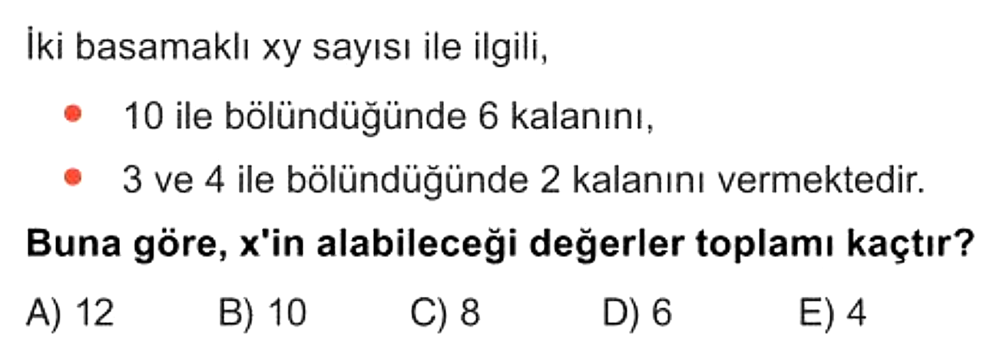
Çözüm
- 10 ile kalan 6 → $y=6$.
- 4 ile kalan 2: $\overline{x6}\equiv2 \pmod 4 \Rightarrow x$ çift; 3 ile kalan 2: $x+6\equiv2 \Rightarrow x\equiv2 \pmod 3$.
- $x\in\{2,8\}$ → toplam 10 → B.
Cevap: B
Soru 10Cevap: A
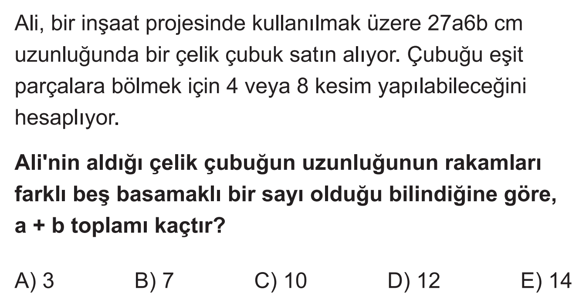
Çözüm
- 4 ya da 8 kesimle 5 ya da 9 eşit parça: uzunluk hem 5 hem 9 ile bölünür.
- 5: $b\in\{0,5\}$; 9: $2+7+a+6+b$ 9'un katı.
- $b=0 \Rightarrow a=3$ (27360); $b=5 \Rightarrow a=7$ (rakam tekrarı) → $a+b=3$ → A.
Cevap: A
Soru 11Cevap: E
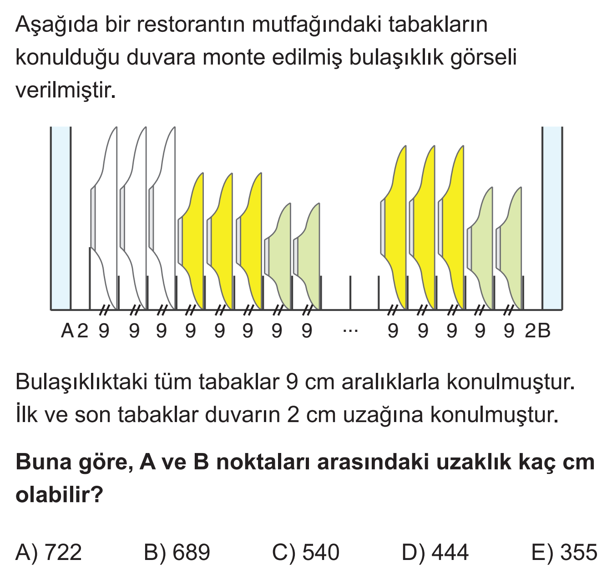
Çözüm
- A–B arası: iki uçta 2'şer cm ve aralarda 9'ar cm: $4+9k$.
- Uzaklık 9'a bölündüğünde 4 kalanını vermeli: rakamlar toplamının 9 ile kalanı 4.
- $355$: $3+5+5=13 \to 4$ → E.
Cevap: E
Soru 12Cevap: E
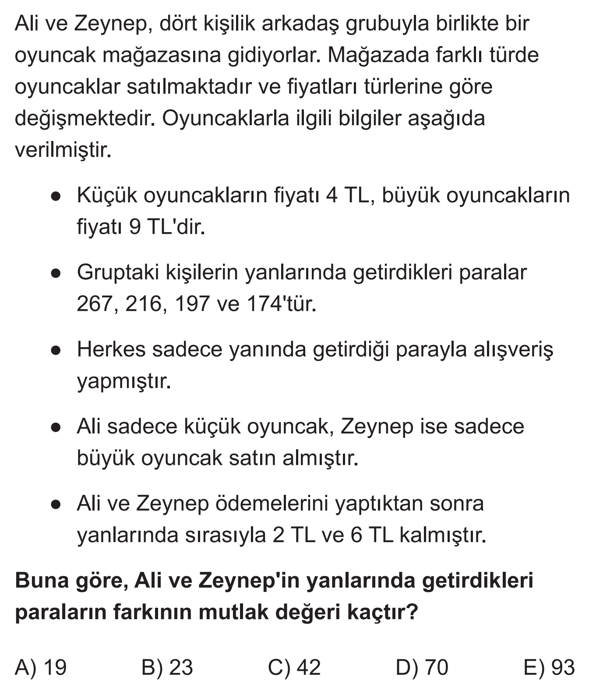
Çözüm
- Ali'nin parası 4'e bölününce 2 kalır: yalnız $174$ uygun.
- Zeynep'in parası 9'a bölününce 6 kalır: rakamlar toplamı $\equiv6$: $267$.
- $267-174=93$ → E.
Cevap: E
Soru 13Cevap: C
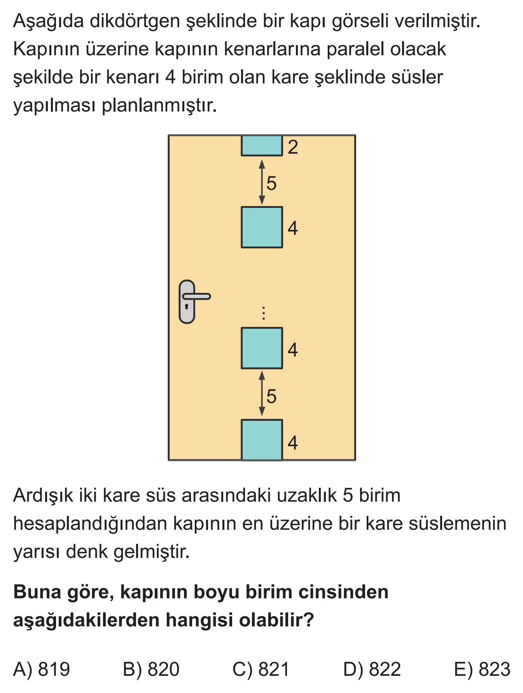
Çözüm
- Yukarıda yarım kare (2 birim), sonra her tekrarda 5 boşluk + 4 kare: boy $9n+2$.
- Boy 9'a bölündüğünde 2 kalanını vermeli.
- $821$: $8+2+1=11 \to 2$ → C.
Cevap: C
Soru 14Cevap: E
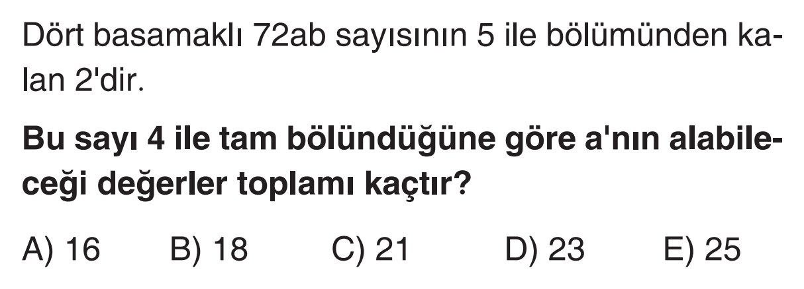
Çözüm
- 5 ile kalan 2 → $b\in\{2,7\}$; 4 ile bölünür → $b$ çift → $b=2$.
- $\overline{a2}$ 4'ün katı → $a$ tek.
- $1+3+5+7+9=25$ → E.
Cevap: E
Soru 15Cevap: A
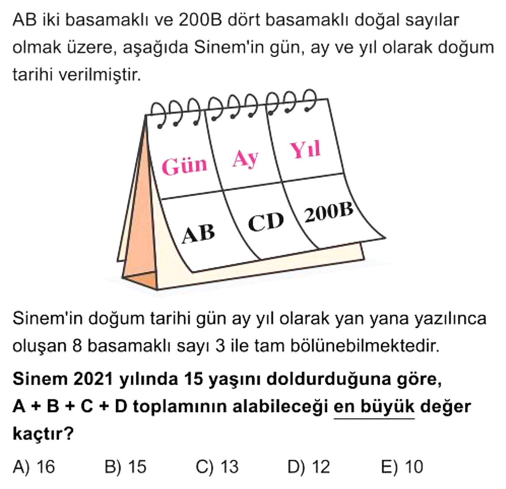
Çözüm
- 2021'de 15 yaşını dolduran Sinem 2006'da doğmuş: $B=6$; gün $\overline{A6}$ → $A\in\{0,1,2\}$.
- 8 basamaklı sayının rakamları toplamı $A+6+C+D+2+0+0+6$ 3'ün katı → $A+C+D\equiv1 \pmod 3$.
- En büyük: $A=2$, ay 08 ($A+C+D=10$) → $A+B+C+D=16$ → A.
Cevap: A
Soru 16Cevap: E
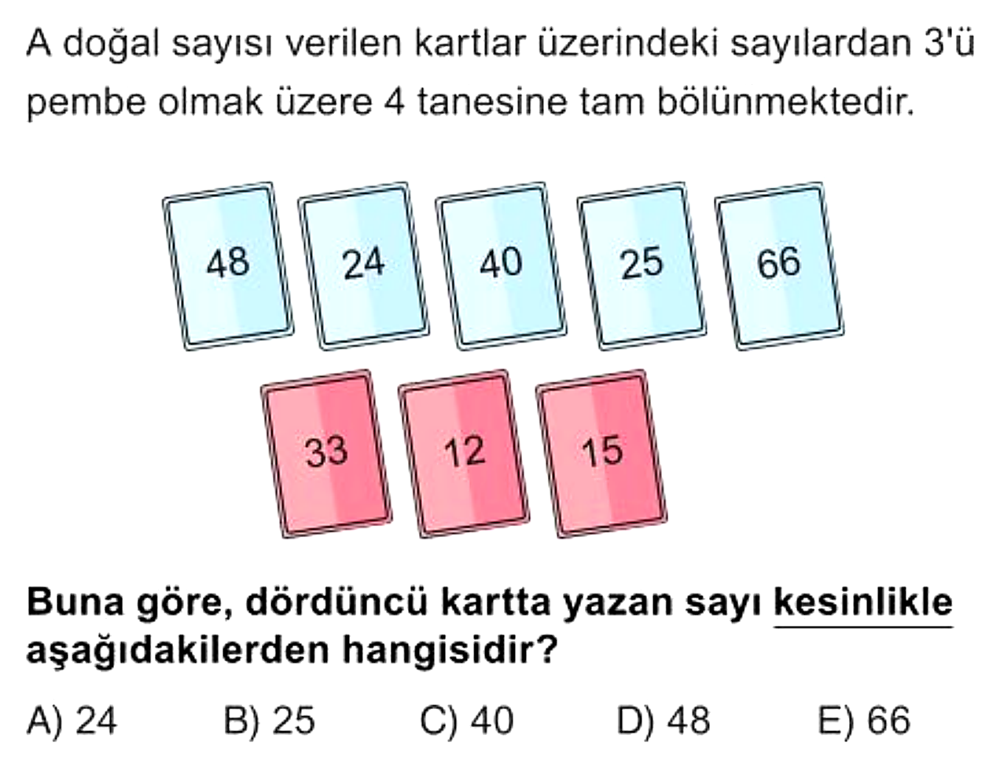
Çözüm
- $A$, pembe kartların hepsine bölünüyor: $\text{EKOK}(33,12,15)=660$'ın katı.
- 660 sayısı 66'ya da bölündüğünden $A$ mutlaka 66'ya bölünür.
- Toplam 4 kart olduğundan dördüncü kart kesinlikle 66'dır → E.
Cevap: E
Soru 17Cevap: B
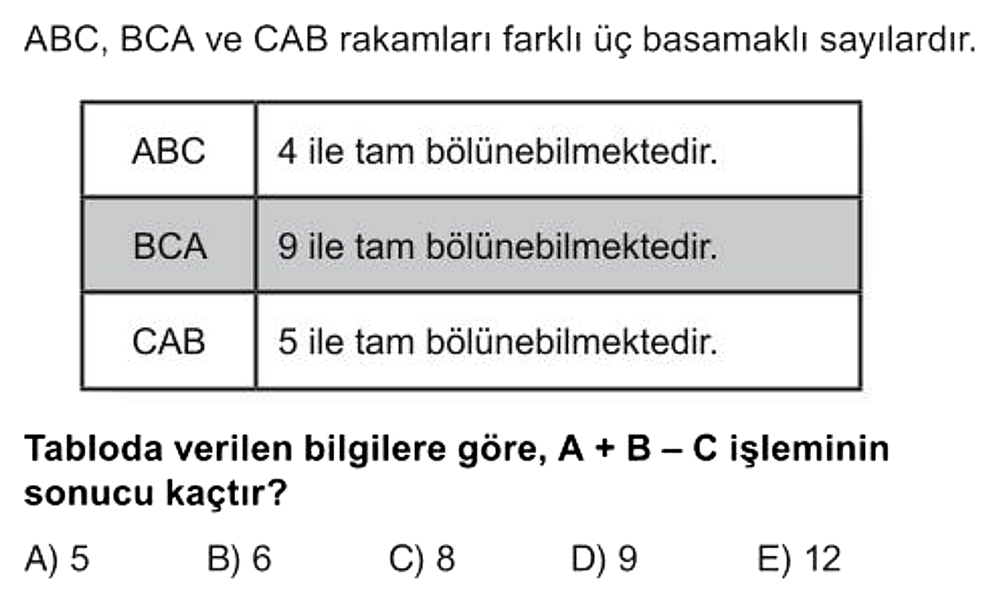
Çözüm
- CAB 5 ile bölünür → $B\in\{0,5\}$; B, BCA'nın ilk rakamı → $B=5$.
- ABC 4 ile bölünür → $\overline{5C}$ ∈ $\{52,56\}$; BCA 9 ile bölünür → $A+5+C$ 9'un katı.
- $C=2$ için $A=2$ (rakamlar farklı değil); $C=6$ için $A=7$ → $7+5-6=6$ → B.
Cevap: B
Soru 18Cevap: C
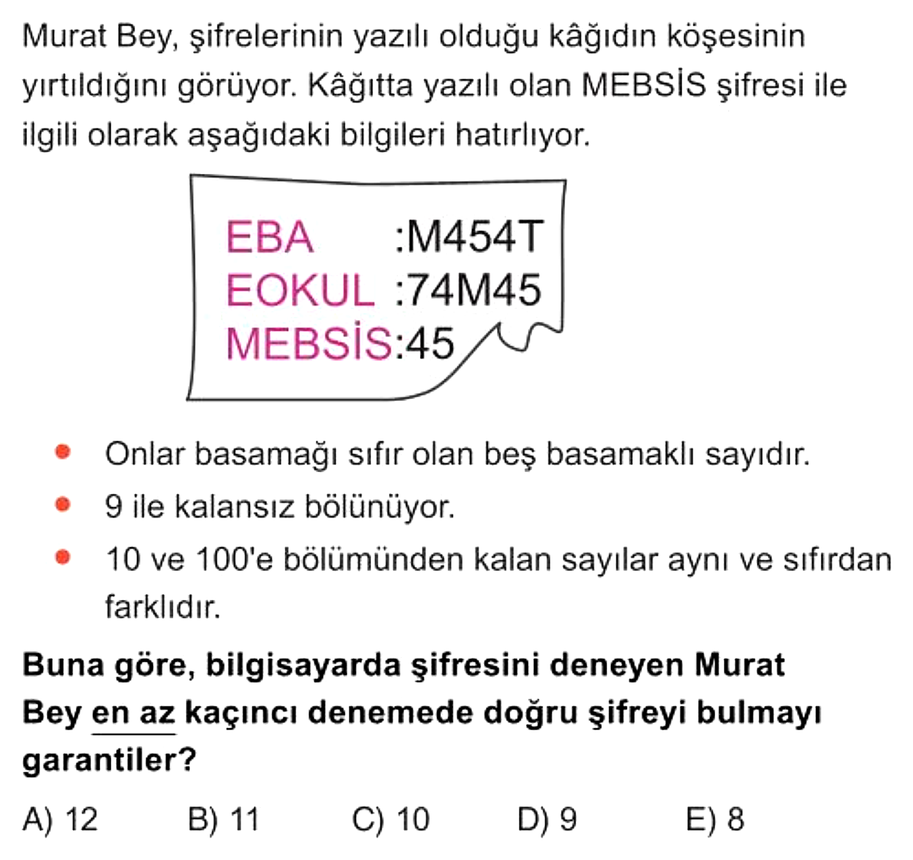
Çözüm
- Şifre $45x0y$ biçiminde (onlar basamağı 0); 10 ve 100 ile kalanlar ikisi de $y$, sıfırdan farklı: $y\ne0$.
- 9 ile bölünme: $4+5+x+y$ 9'un katı → $x+y\in\{9,18\}$.
- $x+y=9$: $y=1,\ldots,9$ (9 şifre); $x+y=18$: $99$ (1 şifre) → en az 10. denemede garanti → C.
Cevap: C
Soru 19Cevap: C
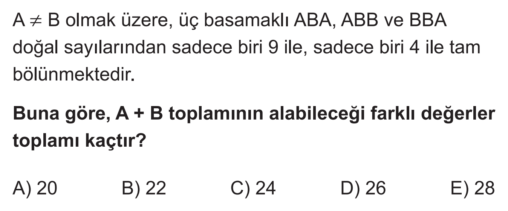
Çözüm
- ABB ile BBA'nın rakamları toplamı aynı; ikisi birlikte bölünür. Sadece biri 9'a bölündüğüne göre o ABA'dır: $2A+B$ 9'un katı.
- ABA ile BBA aynı iki basamakla biter; sadece biri 4'e bölündüğüne göre ABB 4'e bölünür: $B\in\{4,8\}$, $\overline{BA}$ 4'e bölünmez.
- $B=4 \Rightarrow A=7$; $B=8 \Rightarrow A=5$; $A+B\in\{11,13\}$, toplam 24 → C.
Cevap: C
Soru 20Cevap: E
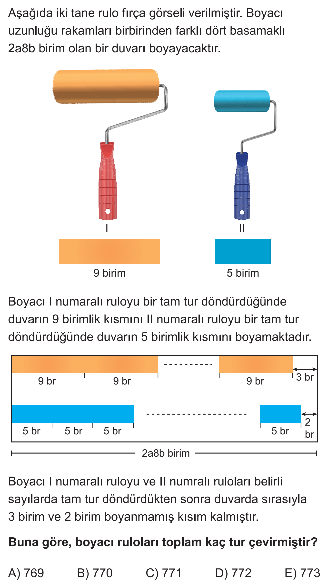
Çözüm
- Duvar $L=9k+3=5m+2$; $L=\overline{2a8b}$: 5 ile kalan 2 → $b\in\{2,7\}$, rakamlar farklı → $b=7$.
- 9 ile kalan 3: $2+a+8+7\equiv3 \Rightarrow a=4$; $L=2487$.
- Tur sayıları $\frac{2484}9=276$ ve $\frac{2485}5=497$; toplam 773 → E.
Cevap: E
Soru 21Cevap: B
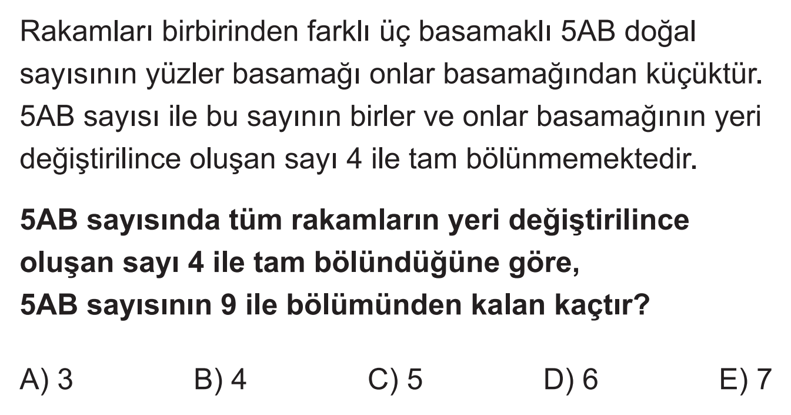
Çözüm
- Tüm rakamların yeri değişince B5A ya da AB5 oluşur; 5 ile biten sayı tektir → B5A 4'e bölünür → $\overline{5A}$ 4'ün katı, $A>5$ → $A=6$.
- 56B ve 5B6 4'e bölünmez: $B$ çift ama $\{0,4,8\}$ değil ve 6'dan farklı → $B=2$.
- $562$: $5+6+2=13 \to$ 9 ile kalan 4 → B.
Cevap: B
Soru 22Cevap: D
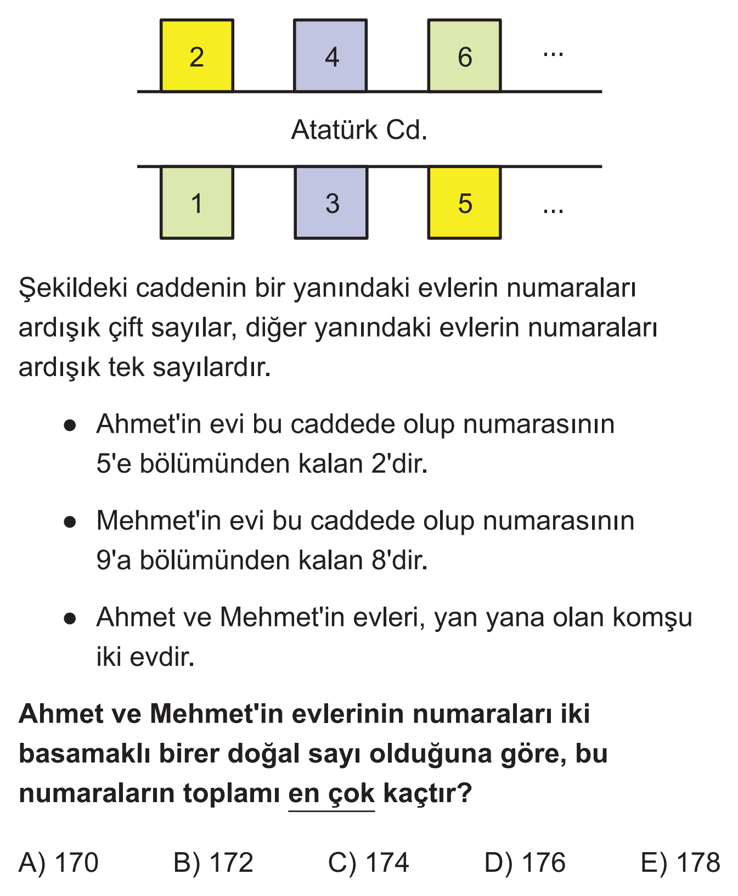
Çözüm
- Komşu evler aynı tarafta: numaraları farkı 2. Mehmet $9k+8$, Ahmet 5'e bölününce 2 kalır (2 ya da 7 ile biter).
- Büyükten deneyelim: Mehmet 98 → komşu 96/100 uymaz; Mehmet 89 → Ahmet 87 ✓.
- Toplam en çok $89+87=176$ → D.
Cevap: D
Soru 23Cevap: E
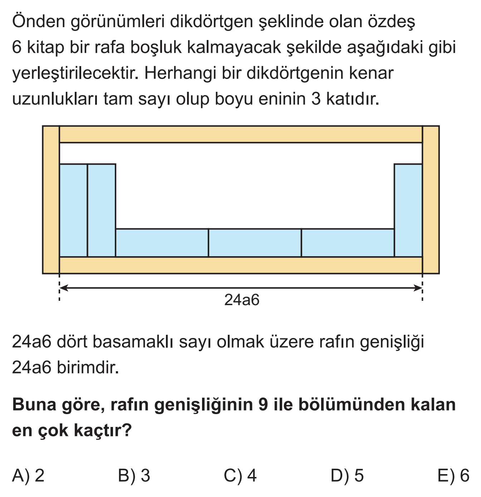
Çözüm
- Kitap eni $e$, boyu $3e$: genişlik $e+e+3\cdot3e+e=12e$ → $24a6$, 12'ye bölünür.
- 4: $\overline{a6}$ → $a$ tek; 3: $12+a$ → $a\in\{0,3,6,9\}$ → $a\in\{3,9\}$.
- $2436 \to 9$ ile kalan 6, $2496 \to 3$; en çok 6 → E.
Cevap: E
Soru 24Cevap: D
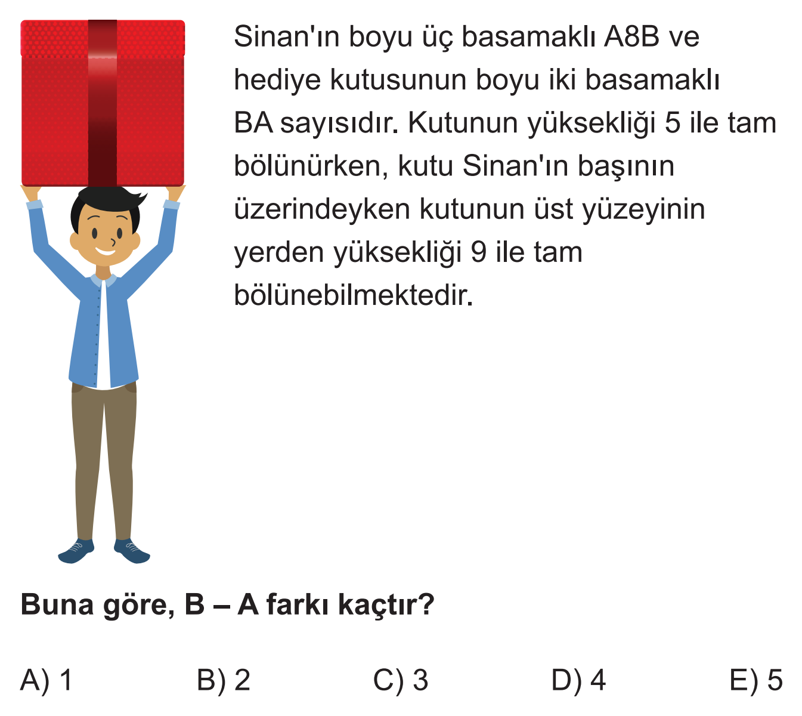
Çözüm
- Kutu boyu $\overline{BA}$ 5'e bölünür → $A\in\{0,5\}$; $A$ üç basamaklının ilk rakamı → $A=5$.
- $\overline{58B}+\overline{B5}=585+11B$ 9'a bölünür; $585$ 9'un katı → $11B$ 9'un katı → $B=9$.
- $B-A=4$ → D.
Cevap: D